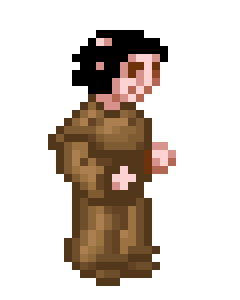
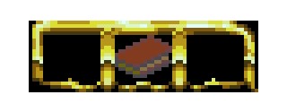
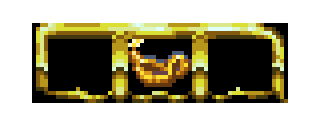

La obra original
CPC 6128, CPC 64 KB, Spectrum 128, MSX y PC DOS.
Homenaje interactivo · Ruta 5 de 5
Reconstrucciones, homenajes y fuentes para seguir explorando después de completas.
Entrar en el capítulo ↓Antonio Giner reconstruyó el juego para los ordenadores modernos y redibujó sus gráficos en VGA. Años después, Manuel Pazos y Daniel Celemín aprovecharon todo ese trabajo anterior para ampliar la aventura con nuevas habitaciones.
El remake de Antonio Giner nació de la reconstrucción del ejecutable para PC mediante ingeniería inversa. Una edición VGA para DOS empezó a circular en 2001; la adaptación para Windows recuperó el sonido, añadió traducciones y permitió jugar en equipos de 32 bits. La versión conservada en el proyecto está fechada el 30 de diciembre de 2008.
Mapa, horarios, personajes y reglas permanecen intactos. El trabajo se concentra en la presentación y la compatibilidad: los escenarios se redibujan en 256 colores, aunque el programa también permite volver a los gráficos CPC en color o monocromo.





Capturas preservadas por Computer Emuzone y reutilizadas con atribución conforme a su política de contenidos.
Extensum conserva la perspectiva isométrica y el horario, pero amplía el mapa, añade personajes, situaciones, escenas cinematográficas y lógica nueva. Permite elegir entre el control clásico y el direccional, y ofrece ayudas opcionales: mapa, cámara alternativa, indicador del sueño del Abad y medidor de aceite.
El proyecto culminó una larga cadena de reconstrucciones que se detalla en el capítulo de Legado. Daniel Celemín renovó el grafismo con un pixel art que recuerda a la película sin perder la claridad visual del original.
Está disponible para Windows, macOS y Linux, con interfaz y textos en varios idiomas. Superó las 20.000 descargas en su primera semana y mantiene una valoración muy positiva en Steam.
Gracias a las traducciones, la emulación y el trabajo constante de la comunidad, el juego terminó dándose a conocer fuera de España pese a carecer de una campaña internacional.
CPC 6128, CPC 64 KB, Spectrum 128, MSX y PC DOS.
Puertos y reconstrucciones separan el juego del hardware que envejece. Ver autores y proyectos.
Un libro coral de 184 páginas reúne memoria cultural, tecnológica y emocional.
El remake ampliado añade habitaciones, personajes y situaciones nuevas.
La AUIC impulsa el sello y, con la UPM, inaugura la primera exposición permanente dedicada a un videojuego en España. [fuente]
Nueva edición comercial, retrospectivas y dos entregas de Retro Gamer España sobre Paco Menéndez.
No hubo un único remake, sino muchos proyectos. Algunos llevaron el juego a nuevas máquinas; otros reconstruyeron su lógica para mantenerlo vivo.
La versión parcheada por Pérez abrió el camino; Pazos la convirtió para MSX2, MSX2+ y turbo R con 16 colores, tres paletas según la hora y traducción inglesa. [fuente]
Para teléfonos Java de hasta 64 KB, trasladó la lógica de Z80 a Java cuando la emulación no podía ejecutarse con fluidez. La edición móvil conservó incluso la grabación de partidas. [fuente]
Abadía documentó el Z80 y creó una conversión funcionalmente equivalente en C/C++. Blanes continuó la rama con VIGASOCOSDL, base para llevarla a sistemas como Linux, macOS, Dreamcast y otros dispositivos. [fuente]
La reconstrucción iniciada años antes pasó el código de 16 a 32 bits, recuperó sonido y traducciones y redibujó la abadía en 256 colores sin alterar sus reglas. [fuente]
Pazos amplió para PC y navegador el trabajo comenzado en móviles. En una rama distinta, Pedro García-pego Catalá tradujo a Java la reconstrucción de Manuel Abadía e Ignacio Baca Moreno-Torres la adaptó a GWT/JavaScript. [fuente]
Veinticinco años después, Habi llevó la versión de CPC 6128 al ordenador de oficina de Amstrad: una conversión jugable y terminable para PCW 8256 y 9512. [fuente]
En 2017 Correos celebró el trigésimo aniversario con seis sellos hexagonales en un mini pliego con forma de pergamino. Al calentar la tinta termocrómica aparecían objetos escondidos tras las puertas, un guiño muy apropiado para un juego lleno de secretos.
La emisión nació de una iniciativa de la Asociación de Usuarios de Informática Clásica (AUIC). En su historia del proyecto se recogen la petición, la negativa inicial, la reclamación, los bocetos y el trabajo colectivo que culminó en el diseño de Juan Delcán, coautor de los gráficos del juego.
Retro Gamer España publicó en el nº 40 la primera parte de «Paco Menéndez ante el espejo», titulada «El genio de Avilés que quería saber». El nº 41 continuó el perfil con «De los monjes franciscanos a la red neuronal de PALOMA», anunciado además en portada. Hay páginas seleccionadas de ambas entregas en la hemeroteca.
Cintas, emuladores, código, sellos y remakes han permitido que cada generación encuentre su propia entrada a la abadía.
La AUIC y la Universidad Politécnica de Madrid inauguraron en el Museo Histórico de la Informática La Abadía del Crimen, el lado humano del videojuego, presentada como la primera exposición permanente dedicada a un videojuego en España.
El montaje trasladó la perspectiva isométrica a un espacio físico: un pequeño laberinto dividido en siete jornadas que repasaba la historia técnica y humana del juego. La presentación oficial del sello y su matasellado de honor formaron parte del mismo acto.
Memoria ciudadana
La primera vez que cargué La Abadía del Crimen en un Sinclair Spectrum, me di cuenta de que estaba ante un videojuego diferente a todos los que había disfrutado anteriormente. Creo que ese recuerdo lo tenemos casi todos los niños que en los años ochenta disfrutamos de aquella informática doméstica, apellidada MSX, Amstrad, Commodore o Spectrum. La Abadía era un desafío. Algo que nos superaba. Sus personajes interactuaban entre ellos como nunca antes habíamos visto, en unos escenarios de gran complejidad y detalle. Nos quedaba grande, muy grande.
Paco era un genio, así se le recuerda. Basta con pasear por portales de Internet para darse cuenta de su importancia en la historia del software español y en la influencia y las vocaciones que despertó en nuevos programadores. Es el símbolo de una época que ya tiene etiqueta: «La Edad de Oro del Soft Español».
Aún hoy, leyendo viejas entrevistas a Menéndez o testimonios de compañeros que trabajaron con él, como Juan Delcán, transmite un entusiasmo contagioso. El ímpetu soñador de los pioneros, de los genios. Y, sobre todo, su humildad.
En una de esas entrevistas, realizada cuando anuncia que abandona el mundo de los videojuegos, habiendo tenido el éxito y acabando de recibir premios por su trabajo (estaba en la cima), manifestaba con humildad: «Prefiero el reconocimiento de la gente al dinero».
Ese reconocimiento deberíamos dárselo orgullosos, aquí, en Avilés, su pueblo. Una calle. Un homenaje.
Su último proyecto era un nuevo sistema de ordenadores, basados en un nuevo tipo de memoria matricial inteligente en el que estaba investigando. Paco Menéndez quería cambiar el mundo con cada cosa que hacía, aunque se le fuese la vida en ello, privándonos de su talento pronto. Demasiado pronto.
El homenaje distingue entre documentos de época, reconstrucciones técnicas, testimonios y retrospectivas. Las interpretaciones son nuestras; indicamos siempre la procedencia de los materiales visuales.
Créditos visuales: páginas y cartografía de las revistas y guías preservadas en la carpeta Revistas; pantallas, mapa general y publicidad recopilados por Computer Emuzone y reutilizados con enlace y atribución conforme a su política; captura PC de la iglesia procedente de Pixelmaniacos; mini pliego conmemorativo procedente de la ficha oficial de Correos; fotografía de la exposición, arte del sello hexagonal y concepto preliminar procedentes de AUIC, reutilizados bajo Creative Commons con atribución y autorización directa; capturas de Extensum procedentes de su página oficial de Steam. Pantallas y sonidos proceden de los archivos y puertos preservados en este proyecto; los retratos y objetos principales fueron extraídos sin redibujado de GraficosCPC. El modo PC conserva las siluetas de los personajes y les aplica la paleta diurna CGA documentada en las capturas; en los objetos, las tintas específicas de cada icono se han verificado directamente contra el volcado de memoria PC. Los equivalentes de GraficosVGA se conservan en el capítulo del remake. Las iniciales de capítulo emplean GregorianFLF, la tipografía proporcionada en este proyecto; las etiquetas del reloj emplean la tipografía de diálogo de 8 bits del juego. La obra, personajes, gráficos y marcas pertenecen a sus respectivos titulares. Sitio no comercial creado con fines de documentación y homenaje.
{kind=link}